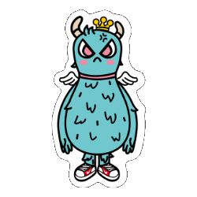
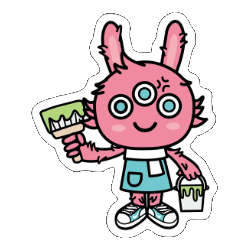
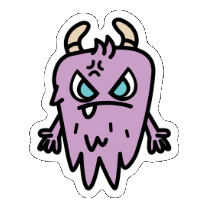
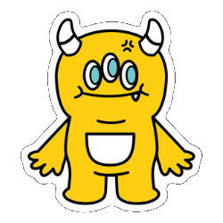

Sticker Pack · free downloads角色貼圖包 · 表情包角色贴图包 · 表情包แพ็กสติกเกอร์ · อีโมจิステッカーパック · 表情
Take the six with you把六位守護者帶走把六位守护者带走พาทั้งหกไปด้วย6人を連れて行こう
Two packs, both free. Six die-cut stickers of the guardians as transparent PNG — the same files used for the printed sticker sheet — and the same six as line art, so you can colour them in yourself. No sign-up, no email address, no watermark.兩包，全部免費。六位守護者的刀模貼圖，透明 PNG —— 同印刷貼圖稿用的是同一批檔案；另外同樣六位以線稿形式提供，讓你自己上色。不用註冊、不用留電郵、沒有浮水印。两包，全部免费。六位守护者的刀模贴图，透明 PNG —— 同印刷贴图稿用的是同一批文件；另外同样六位以线稿形式提供，让你自己上色。不用注册、不用留邮箱、没有水印。สองแพ็ก ฟรีทั้งหมด สติกเกอร์ไดคัทของผู้พิทักษ์หกใบเป็น PNG โปร่งใส — ไฟล์ชุดเดียวกับที่ใช้พิมพ์จริง และอีกชุดเป็นลายเส้นให้คุณระบายสีเอง ไม่ต้องสมัคร ไม่ต้องใช้อีเมล ไม่มีลายน้ำ2つのパック、どちらも無料。守護者6人のダイカットステッカー（透明PNG。印刷したステッカーシートと同じファイル）と、同じ6人の線画。線画は自分で塗れます。登録もメールアドレスも不要、透かしもありません。
What these are: character stickers, cut out and ready to drop into a chat. They are not caption memes — text-and-reaction images would be new artwork, and there is none yet.這是什麼：角色貼圖，已經去背，可以直接丟進聊天。它們不是文字表情包 —— 加文字的反應圖屬於新畫的內容，目前還沒有。这是什么：角色贴图，已经去背，可以直接丢进聊天。它们不是文字表情包 —— 加文字的反应图属于新画的内容，目前还没有。สิ่งเหล่านี้คืออะไร: สติกเกอร์ตัวละคร ที่ตัดพื้นหลังแล้ว พร้อมใช้ในแชท ไม่ใช่มีมใส่ข้อความ — ภาพ反應ที่มีข้อความต้องวาดใหม่ ซึ่งยังไม่มีこれは何か：切り抜き済みで、そのままチャットに貼れるキャラクターステッカーです。文字入りのリアクション画像ではありません。それは新規作画が必要で、まだありません。
Pack 01第 01 包第 01 包แพ็ก 01パック 01
The Six Guardians六位守護者六位守护者ผู้พิทักษ์ทั้งหก6人の守護者
One sticker per guardian, cut out on a white border with a transparent background — the same files used for the printed sticker sheet.每位守護者一張，白色刀模邊、透明背景 —— 同印刷貼圖稿用的是同一批檔案。每位守护者一张，白色刀模边、透明背景 —— 同印刷贴图稿用的是同一批文件。ผู้พิทักษ์ละหนึ่งใบ ไดคัทขอบขาว พื้นหลังโปร่งใส — ไฟล์ชุดเดียวกับที่ใช้พิมพ์สติกเกอร์จริง守護者ごとに1枚。白いダイカット縁、背景は透明。印刷したステッカーシートと同じファイルです。


Download PNG下載 PNG下载 PNGดาวน์โหลด PNGPNG をダウンロード

Download PNG下載 PNG下载 PNGดาวน์โหลด PNGPNG をダウンロード Download PNG下載 PNG下载 PNGดาวน์โหลด PNGPNG をダウンロード


Download PNG下載 PNG下载 PNGดาวน์โหลด PNGPNG をダウンロード

Download PNG下載 PNG下载 PNGดาวน์โหลด PNGPNG をダウンロード Download PNG下載 PNG下载 PNGดาวน์โหลด PNGPNG をダウンロード
PNG, transparent background, 250 px on the long side. This is the master size, so nothing has been enlarged or sharpened. LINE and WeChat accept this size as it is; WhatsApp and Telegram ask for 512 px, so these will look a little soft there.PNG、透明背景、長邊 250 px。這是母檔尺寸，沒有放大或銳化過。LINE 與 WeChat 直接可用；WhatsApp 與 Telegram 要求 512 px，所以在該處會略為偏軟。PNG、透明背景、长边 250 px。这是母档尺寸，没有放大或锐化过。LINE 与 WeChat 直接可用；WhatsApp 与 Telegram 要求 512 px，所以在该处会略显偏软。PNG พื้นหลังโปร่งใส ด้านยาว 250 px นี่คือขนาดมาสเตอร์ ไม่ได้ขยายหรือ sharpen จึงใช้กับ LINE และ WeChat ได้ทันที ส่วน WhatsApp และ Telegram ต้องการ 512 px จึงจะดูนุ่มลงเล็กน้อยPNG・背景透明・長辺250px。マスターサイズそのままで、拡大も輪郭補正もしていません。LINEとWeChatはこのサイズで使えます。WhatsAppとTelegramは512pxを求めるため、やや柔らかく見えます。
Pack 02第 02 包第 02 包แพ็ก 02パック 02
Colour-In Line Art線稿上色版线稿涂色版ลายเส้นระบายสีぬりえ線画
The same six guardians as outline-only line art, so you can colour them in yourself — on paper, in a drawing app, or as your own sticker.同樣六位守護者，只保留線稿，讓你自己上色 —— 可以印出來、用繪圖 App，或用來做自己的貼圖。同样六位守护者，只保留线稿，让你自己上色 —— 可以打印出来、用绘图 App，或用来做自己的贴图。ผู้พิทักษ์หกคนเดียวกันในแบบลายเส้นล้วน ให้คุณระบายสีเอง จะบนกระดาษ ในแอปวาดรูป หรือทำเป็นสติกเกอร์ของคุณเอง同じ6人の守護者を線画だけにしたもの。紙に、お絵かきアプリで、あるいは自分のステッカーとして色を塗れます。


PNG line art, transparent background, no fill anywhere — so nothing can bleed into a print, and any colouring tool will work.PNG 線稿、透明背景、完全沒有填色 —— 所以列印時不會有顏色滲出，用任何上色工具都可以。PNG 线稿、透明背景、完全没有填色 —— 所以打印时不会有颜色渗出，用任何涂色工具都可以。PNG ลายเส้น พื้นหลังโปร่งใส ไม่มีการเติมสีเลย สีจึงไม่เลอะตอนพิมพ์ และใช้เครื่องมือระบายสีอะไรก็ได้PNGの線画、背景透明、塗りは一切なし。印刷時に色がにじまず、どんな着彩ツールでも使えます。
Using them in a chat app在聊天 App 裡使用在聊天 App 里使用การใช้งานในแอปแชทチャットアプリでの使い方
How to get a PNG into a chat如何把 PNG 放進聊天裡如何把 PNG 放进聊天里วิธีเอา PNG เข้าแชทPNG をチャットで使う方法
These are plain PNG files, so how you add them depends on the app. We have written down what each one actually requires rather than pretending a single button does it everywhere. We could not test every app version, so if a menu has moved, the file still works — you just need to find the same option under a new name.這些是普通 PNG 檔，所以怎麼加入取決於你用哪個 App。我們把每個 App 的實際要求寫出來，而不是假裝一個按鈕就能全部搞定。我們無法逐一測試每個版本，所以如果選單位置改了，檔案本身仍然可用 —— 你只要在新名稱下找到同一個選項。这些是普通 PNG 文件，所以怎么加入取决于你用哪个 App。我们把每个 App 的实际要求写出来，而不是假装一个按钮就能全部搞定。我们无法逐一测试每个版本，所以如果菜单位置改了，文件本身仍然可用 —— 你只要在新名称下找到同一个选项。ไฟล์เหล่านี้เป็น PNG ธรรมดา วิธีเพิ่มจึงขึ้นกับแอปที่ใช้ เราเขียนสิ่งที่แต่ละแอปต้องทำจริง ๆ ไว้ แทนที่จะบอกว่ามีปุ่มเดียวใช้ได้ทุกที่ เราไม่ได้ทดสอบทุกเวอร์ชัน ถ้าเมนูย้ายที่ ไฟล์ก็ยังใช้ได้ แค่หาเมนูเดิมในชื่อใหม่これは普通のPNGファイルなので、追加方法はアプリによって違います。「どこでも1ボタン」とは書きません。各アプリに実際に必要な手順を書きました。全バージョンは試せていないので、メニューが移動していてもファイル自体は使えます。同じ項目を新しい名前で探してください。
LINELINELINELINELINE
Send the PNG in a chat as a photo, or save it to your device and use it from your photo library. LINE sticker sets in the official store are a separate thing: selling there needs an approved LINE Creators account, and these files are not in the store.把 PNG 當作相片在聊天中傳送，或存到裝置裡再從相簿使用。官方商店的 LINE 貼圖是另一件事：要在那裡販售需要已審核的 LINE Creators 帳號，而這些檔案並不在商店裡。把 PNG 当作照片在聊天中发送，或存到设备里再从相册使用。官方商店的 LINE 贴图是另一件事：要在那里销售需要已审核的 LINE Creators 账号，而这些文件并不在商店里。ส่ง PNG เป็นรูปในแชท หรือบันทึกไว้ในเครื่องแล้วใช้จากอัลบั้ม สติกเกอร์ LINE ในสโตร์ทางการเป็นอีกเรื่อง ต้องมีบัญชี LINE Creators ที่อนุมัติแล้ว และไฟล์เหล่านี้ไม่ได้อยู่ในสโตร์PNGを写真としてチャットに送るか、端末に保存して写真から使います。公式ストアのLINEステッカーは別で、販売にはLINE Creatorsの承認が必要です。これらのファイルはストアにはありません。
WhatsAppWhatsAppWhatsAppWhatsAppWhatsApp
WhatsApp does not let you import a PNG as a sticker. Making a sticker pack there needs a third-party sticker app that exports a WhatsApp sticker pack, and adding your PNGs inside that app. Anyone who tells you a website can add stickers to WhatsApp in one tap is describing something WhatsApp does not allow.WhatsApp 不讓你直接匯入 PNG 作為貼圖。要製作 WhatsApp 貼圖包，需要一個可以匯出 WhatsApp 貼圖包、並讓你在裡面加入 PNG 的第三方 App。如果有人说一個網站可以一鍵把貼圖加進 WhatsApp，那是在描述 WhatsApp 並不允許的事。WhatsApp 不让你直接导入 PNG 作为贴图。要制作 WhatsApp 贴图包，需要一个可以导出 WhatsApp 贴图包、并让你在里面加入 PNG 的第三方 App。如果有人说一个网站可以一键把贴图加进 WhatsApp，那是在描述 WhatsApp 并不允许的事。WhatsApp ไม่ให้คุณนำเข้า PNG เป็นสติกเกอร์โดยตรง การทำแพ็กสติกเกอร์ที่นั่นต้องใช้แอปสติกเกอร์ของบุคคลที่สามที่ส่งออกแพ็ก WhatsApp ได้ แล้วเพิ่ม PNG ของคุณในแอปนั้น ใครที่บอกว่าเว็บไซต์เพิ่มสติกเกอร์ลง WhatsApp ได้ในคลิกเดียว กำลังพูดถึงสิ่งที่ WhatsApp ไม่อนุญาตWhatsAppはPNGをそのままステッカーとして読み込めません。ステッカーパックを作るには、WhatsApp用パックを書き出せる第三者製ステッカーアプリが必要です。「サイトからワンタップでWhatsAppに追加」は、WhatsAppが許していないことです。
TelegramTelegramTelegramTelegramTelegram
Send the PNG to yourself, then use Telegram's own sticker-set creation to build a set from it. Telegram asks for 512 × 512, so it will scale these up — which is exactly the softness the pack note above warns about.把 PNG 傳給自己，再用 Telegram 內建的貼圖集功能建立一組。Telegram 要求 512 × 512，所以它會把這些圖放大 —— 這正是上面包裝說明提到的偏軟問題。把 PNG 发给自己，再用 Telegram 内置的贴图集功能建立一组。Telegram 要求 512 × 512，所以它會把这些图放大 —— 这正是上面包装说明提到的偏软问题。ส่ง PNG ให้ตัวเอง แล้วใช้ฟังก์ชันสร้างชุดสติกเกอร์ของ Telegram เพื่อสร้างชุดจากไฟล์นั้น Telegram ต้องการ 512 × 512 จึงจะขยายให้ ซึ่งก็คือความนุ่มที่หมายเหตุด้านบนเตือนไว้PNGを自分宛に送り、Telegramのステッカーセット作成機能でセットにします。Telegramは512×512を求めるため拡大されます。上のパック注記で触れた「柔らかく見える」問題がこれです。
WeChat微信微信WeChatWeChat
Save the PNG to your album, then add it as a custom emoji from your photos. WeChat's own sticker packs and the official sticker store are separate from this download.把 PNG 存到相簿，再從相片加入為自訂表情。微信自己的貼圖包與官方貼圖商店跟這個下載是兩件不同的事。把 PNG 存到相册，再从照片加入为自定义表情。微信自己的贴图包与官方贴图商店跟这个下载是两件不同的事。บันทึก PNG ลงอัลบั้ม แล้วเพิ่มเป็นอีโมจิกำหนดเองจากรูปภาพ แพ็กสติกเกอร์ของ WeChat เองและสโตร์ทางการเป็นคนละเรื่องกับการดาวน์โหลดนี้PNGをアルバムに保存し、写真からカスタム表情として追加します。WeChat自身のステッカーパックや公式ストアは、このダウンロードとは別です。
Signal, iMessage, Discord, SlackSignal、iMessage、Discord、SlackSignal、iMessage、Discord、SlackSignal, iMessage, Discord, SlackSignal、iMessage、Discord、Slack
These accept an image file directly, so the transparent PNG works as it is — attached, pasted or uploaded.這些都直接接受圖檔，所以透明 PNG 可以直接用 —— 附件、貼上或上傳都可以。这些都直接接受图片文件，所以透明 PNG 可以直接用 —— 附件、粘贴或上传都可以。แอปเหล่านี้รับไฟล์ภาพได้โดยตรง PNG โปร่งใสจึงใช้ได้ทันที — แนบ วาง หรืออัปโหลดこれらは画像ファイルをそのまま受け取るので、透明PNGがそのまま使えます。添付・貼り付け・アップロードのいずれでも。
Licence授權授权สิทธิ์การใช้งานライセンス
What you may do with these files這些檔案你可以怎樣用这些文件你可以怎样用ไฟล์เหล่านี้ใช้ทำอะไรได้บ้างこれらのファイルでできること
Yes — free可以 —— 免費可以 —— 免费ได้ — ฟรีできます — 無料
- Chat, posts, stories, your own device wallpapers.聊天、貼文、限時動態、自己裝置的桌布。聊天、帖子、动态、自己设备的壁纸。แชท โพสต์ สตอรี่ วอลเปเปอร์ในเครื่องคุณเองチャット、投稿、ストーリー、自分の端末の壁紙。
- Printing one for yourself, or colouring the line-art pack in.自己印一張，或用線稿包自己上色。自己打印一张，或用线稿包自己上色。พิมพ์ไว้ใช้เอง หรือระบายสีชุดลายเส้น自分のために1枚印刷する、線画パックを塗る。
- Using them in a school or community project that is not sold.用於不販售的學校或社群項目。用于不销售的学校或社区项目。ใช้ในโครงงานโรงเรียนหรือชุมชนที่ไม่มีการขาย販売しない学校・地域のプロジェクトで使う。
Please do not請不要请不要โปรดอย่าご遠慮ください
- Sell the files, or republish them as your own sticker pack.轉售這些檔案，或當作自己的貼圖包重新發布。转售这些文件，或当作自己的贴图包重新发布。ขายไฟล์ หรือเผยแพร่ซ้ำเป็นแพ็กสติกเกอร์ของคุณเองファイルを販売する、自分のステッカーパックとして再配布する。
- Use them in advertising, packaging or merchandise.用於廣告、包裝或商品。用于广告、包装或商品。ใช้ในโฆษณา บรรจุภัณฑ์ หรือสินค้า広告・パッケージ・グッズに使う。
- Redraw, trace or alter them and present the result as official.重畫、描摹或修改後，把成品當作官方發布。重画、描摹或修改后，把成品当作官方发布。วาดใหม่ ลอก หรือดัดแปลง แล้วนำเสนอผลงานว่าเป็นทางการ描き直す・トレスする・改変して、公式として発表する。
Commercial use is licensed separately and priced by category — see the licensing page, or just ask. The characters and the artwork belong to their creator.商業用途另外授權，按類別定價 —— 請看授權頁，或直接詢問。角色與美術屬於其創作者。商业用途另外授权，按类别定价 —— 请看授权页，或直接询问。角色与美术属于其创作者。การใช้งานเชิงพาณิชย์มีสัญญาอนุญาตแยก คิดราคาตามประเภท — ดูหน้าสิทธิ์การใช้งาน หรือถามได้เลย ตัวละครและงานศิลป์เป็นของครีเอเตอร์商用は別ライセンスで、カテゴリーごとの価格です。ライセンスページをご覧いただくか、お尋ねください。キャラクターとアートは制作者に帰属します。
Where else to look還可以看什麼还可以看什么ดูอย่างอื่นได้ที่ほかに見るもの
Meet the six認識六位守護者认识六位守护者พบผู้พิทักษ์ทั้งหก6人に会う
Who each guardian is, what they carry, and what they are afraid of.每位守護者是誰、背負什麼、害怕什麼。每位守护者是谁、背负什么、害怕什么。ผู้พิทักษ์แต่ละคนเป็นใคร แบกอะไร และกลัวอะไร各守護者が誰で、何を抱え、何を恐れているか。
Wallpapers & colouring桌布與著色頁壁纸与涂色页วอลเปเปอร์และหน้าระบายสี壁紙とぬりえ
Phone and desktop wallpapers for every guardian, and printable colouring pages.每位守護者的手機與桌面桌布，以及可列印的著色頁。每位守护者的手机与桌面壁纸，以及可打印的涂色页。วอลเปเปอร์มือถือและคอมพิวเตอร์ของทุกคน และหน้าระบายสีที่พิมพ์ได้全員のスマホ・PC壁紙と、印刷できるぬりえ。
Read the stories讀故事读故事อ่านเรื่องราว物語を読む
120 four-panel stories behind the six, in five languages.六位背後 120 篇四格故事，五種語言。六位背后 120 篇四格故事，五种语言。120 เรื่องสี่ช่องเบื้องหลังทั้งหก ในห้าภาษา6人の背景にある120本の4コマ、5言語。